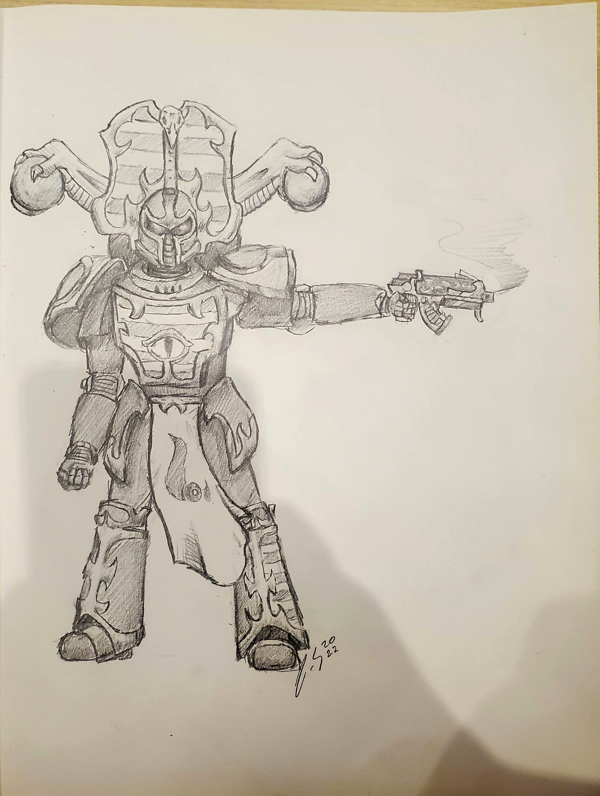
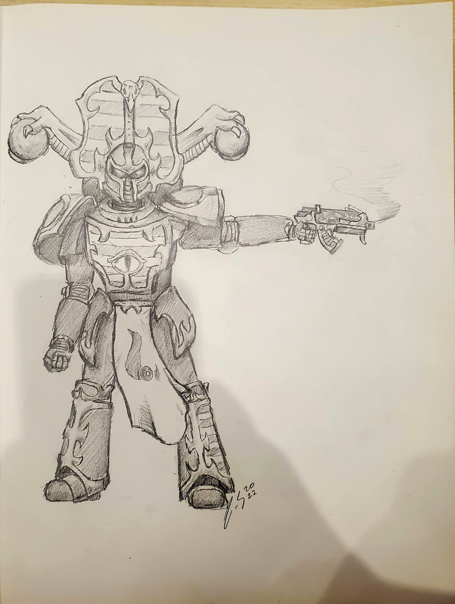

Here is a short story that I wrote a while back and I revised it a bit more. Hope you enjoy!
I approach the door. I'm surprised it's still standing up as it is. The old oak wood boards are split and are barely hanging on. Then again, this castle-like home has been here since this town was founded. This would be an amazing place to live, with its cobblestone walls, beautifully intricate oak doors, and a spiraling tower with the most gorgeous view of the town and surrounding mountains. But once you have heard what's happened here, you wouldn’t dare step in. Unless, of course, you’re me.
Ever since the infamous father who murdered his family at this house, known here as the Darius Murder of '73, it's no surprise this home is called The Corpse House, mainly because they were never able to find the bodies of any of the family members. The only thing that remained was pools of their blood. The police never declared it a murder, but everyone in the town knew: they were gone for good. The father of the family, Andrew Darius, a well-known preacher in town, left quickly after his case was cleared and was no longer a suspect, having his bags out on the porch that morning. Shortly after this tragedy occurred, people started reporting stories about seeing ghosts around this place. They say that the spirits in there were the dead family members, trapped in this plane of existence without a conclusive end to their lives.
It became such the talk of the town that the local newspaper even had a column dedicated to people's tales of their events. After a while, it was taken down as a good amount of townsfolk started writing less about the murders and used it for free advertising. Nonetheless, locals and out-of-towners come by sometimes just to see if it's real, to come as a “tourist attraction”, or to even talk to the spirits in this home. But even the most daring and stupid people (most of whom are teenagers) who come in here to prove that they could do it come out mortified, and never return. Unfortunately, some don’t ever come out.
Usually, it's nothing more than “the house you don't visit", and just some small-town legend, but it's become more of a ruckus recently. The people who have lived here have seen a tall, dark figure entering and exiting the house, and have even been seen just standing outside it, watching everyone pass by. Some have even said they have heard screams out of it in the later hours, with police showing up to find nothing except an empty house. Hell, I have even seen glimpses of it, its lingering darkness swallowing out any light that could be there. They always have to put me on the hardest tasks, huh?
I take in a breath, and twist the doorknob, only to find it locked. Of course. So, I go with Plan B and take a few swings at it.
Crack!...
Crack!...
Snap!
The door fell and broke off into big splinters, scattering across the stone floor inside. I take a step in, crossing over myself, grabbing my rosary, and peering around the dark abyss of a room.
As my eyes finally adjust to the darkness, I see that this room must have been a storage room, with all the shelves filled with tools, canned food, and other odd bits and pieces. I grab my lantern out of my bag to get a better view of things around this place. I see some odd books along the dusty shelves too, branding topics ranging from blood craft and the aethereal planes to talking to the dead. Strange books to have in a family home of a small town like this.
I spot out of the corner of my eye something inscribed on the floor. I walk over to investigate further. A large star was drawn out onto the ground with white chalk, and the star was encompassed by a circle. I noticed dried up blood making out symbols that I don't remember ever learning about lacing the circle. At each point in the star, I saw a candle placed. When I look closer though, I notice that they were quite oddly shaped to be candles. I pick one up to get a better look at it. But as I grab it, it breaks in my hands, and I see a small bone in the middle. The decaying finger fell from my hands as the rotted stench hits me, and I vomit by the shelves. After taking some deep breaths, I glance back over. I’ve seen a lot of things, but nothing quite like this. …What the hell happened here?
“So… someone finally found it.”
A deep laugh ensues from the corner behind me. I can practically hear the wicked smile forming on his face. I turn around, lantern in hand, to investigate where the sound came from. The corner of the room I look at stays dark, despite the flickering flame between the glass panes of the lantern. Before I can think, a pair of glowing, red eyes appear out of the dark haze. I immediately reach for my ancient texts, and I hear another bloodcurdling laugh, simultaneously high and low in pitch. I reply with, “What are you?”
The eyes tilt back like they were attached to a head that isn't visible and laughs again. He slowly brings his gaze back to me and says, “You know exactly what I am.”
I do know what he is, that is true, but not his name. The one thing I need, and the one thing The Church didn't have. Before I came here, I looked up everything I could on this home, the Darius family that was a victim of the Murder Of '73, the history of the home, people the family knew, and anything else in between. Nothing. Absolutely nothing.
“Who are you?” I demand, with a slight shake in my voice. I don't know if I'm ready for this. He looks back at me, and I see his appearance now emerge from the shadows, his slender form, his void-like blackness, with a gravity that pulls in anything bright into it. An unsettling grin forms out of the dark mass of his face, which is petrifying, unlike any others of his kind. Yep, it's him. And he knows I’m scared. He then replies with, “The end of the ones who dare stay”
But just before I can formulate my thoughts, tools start flying off the shelves and I barely dodge them. I flip open my texts and start reciting the rhythmic tongue. The clanging of the tools and other objects skirting across the stone floor got louder and louder, so I started yelling the lines out to him. I hear him moan and groan, as I yell out again, “Who are you?!”I get nothing but a gargling groan, so I keep asking over and over again, “Who are you? Who are you?! Who are…”
“The one who killed that family.”, he muttered.
I froze, and everything around me joined in my stiffness. Nope, I was not ready for this. What was I thinking? There's no point in deliberating this now, I’ve made my decision, and I’m here now. I need to figure out his name. My brain was racing, thoughts coming in and out as I processed it. A complete thought finally comes to me. As he lurched toward me with what little energy he had remaining, I backed away and I remembered reading one of the last newspaper story columns about the Murder of ‘73 when even the people obsessed with this case got tired of it. It was a neighbor who was up when he heard his dog barking at something outside. He walked out of his home and saw a light on in the Darius house. It was silent. He figured that some kids broke in to go check it out, so he started walking over to tell them to get their dumbasses out of there. Then, a tall dark figure appeared in the window. The house arose in screams of terror. He started running towards the house. As he burst in, the house was silent, and he found nothing. He said they kept hearing a scream of just one word. It was De… Demo…
But just as his name appears, it vanishes as he tackles me to the floor. My lantern and my Bible fell to the floor as I got the wind knocked out of me, and I felt the creeping coldness of his hands wrap around my neck, his piercing white grin shining in what little light was in the room. I hear him laugh even more, as the little air I have is drained from me. My vision gets hazier and hazier as I run out of breath, run out of time. Before I couldn’t see anymore, I thought Oh Lord, help me now… Please… My prayer was soon answered as I remembered his name and said with my last breath, “Demorius”.
He is shocked as if he's never heard his name, and lets go of me. I use his confusion to shove him away from me and I manage to rise to my feet. I say his name again. He hisses at me and takes a step back. So I keep yelling his name, over and over. He yells and wails and shrieks. He keeps walking away from me, like a frightened animal, and he gets backed into his corner. I yell, “By the power of the Father, the Son, and the Holy Spirit, Demorius, I send you back to hell!”
The words hit Demorius like bullets, making him fall to his knees, screaming out in pain. He gives his final cry, and as his form disappears into nothing, I take a deep breath, sit down, and cry.
...
The police came in later that night since the neighbors heard the screams from the demon. They started to search the whole house, found me recovering, and I explained to them what happened.
After searching the whole place, they end up finding the bodies of the Darius', still newly killed, as if they weren't brutally murdered 20 years ago. So, the police were finally able to deem it a murder, and I was finally able to figure out how they died. I learned after the cleansing that the father was a cult member, and was known to have contacted the supernatural, and even made a deal with one, Demorius to be specific. The death of the family was the payment. What he wanted in exchange, I will probably never learn.
A few weeks after the incident, people never saw or heard anything from the house again. Everything went back to the usual small-town business. The groups of older folks went to get their coffee at the cafe and bullshit about life and tell stories, the streets hummed with beat-up cars and the occasional unmuffled one, and the barbers had one less thing to discuss with their clients. I like to think that the spirits in that home were finally put to rest. The next day, I get a new detail from my mage. Life goes on, I guess.

 
Page 1
Page 3

Page 1
Page 3